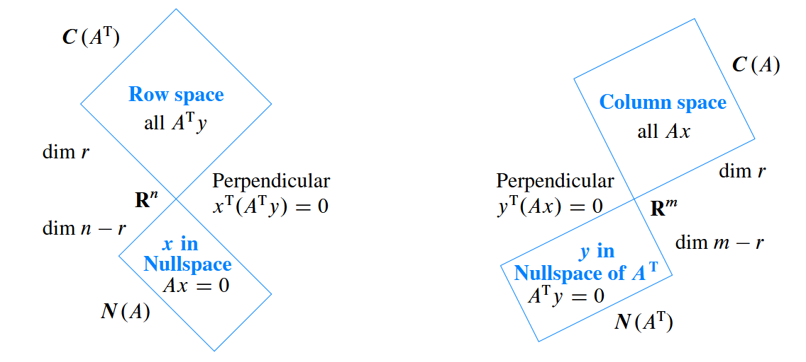

Introduction to linear algebra
矩阵视角下的线性方程组
\[ \begin{aligned} 2x_1 + 3x_2 &= 8 \\ x_1 - x_2 &= 1 \\ \end{aligned} \]
Can be represented in matrix form as \(Ax = b\):
\[ \begin{bmatrix} 2 & 3 \\ 1 & -1 \\ \end{bmatrix} \begin{bmatrix} x_1 \\ x_2 \\ \end{bmatrix} = \begin{bmatrix} 8 \\ 1 \\ \end{bmatrix} \]
对线性方程组的求解有两种思路：
行视角，每一个方程代表一条直线，直线的交集即为方程组的解，其本质时把每一行看成一个基向量，然后把目标向量投影，取投影长度。
列视角，对列向量寻找合适的线性组合，得到新向量， 其本质时在标准基空间中，取对应的列向量，然后线性组合出目标向量。
\[ x_1\begin{bmatrix} 2 \\ 1 \\ \end{bmatrix} + x_2 \begin{bmatrix} 3 \\ -1 \\ \end{bmatrix} = \begin{bmatrix} 8 \\ 1 \\ \end{bmatrix} \]
从列视角的观点来看，线性方程组有解的条件显然是当目标向量 \(b\) 处于所有列向量张成的空间之中之时才有解。
这里涉及到矩阵的乘法，对矩阵的乘法有四种理解：
- 左乘为行变换，为行的线性组合。
- 右乘为列变换，为列的线性组合。
- 行与列点积得到单个元素， \(C_{ij} = a_i * c_j\), 元素\(c_{ij}\) 为行 \(i\) 与 列 \(j\) 的点积。
- 列与行乘积得到矩阵。
- 分块矩阵。
其中最常用的为列视角，应时刻记住；行视角的观点主要用于用矩阵描述高斯消元法，因为高斯消元法涉及到行的组合。
对于线性方程组的求解而言，消元法是最常见的方法。消元法为将系数矩阵 \(A\) 的对角线元素视为为主元（pivot），将主元下方的所有元素通过变换之后为 0，具体的操作方法为用主元之后的每一行减去主元行适当的倍数。
若系数矩阵为方阵且可逆：
每一步消元操作可按消去的元素记为消元矩阵 \(E_{ij}\)， 为下三角矩阵。
若出现主元为 0 时，则通过行交换与下面的行进行交换，该操作可用矩阵记为置换矩阵 \(P\)， 置换矩阵 \(P^T = P^{-1}\)
消元以后则得到上三角阵 \(U\)（Upper-triangular matrix）
\[ \begin{bmatrix} * & * & * \\ 0 & * & * \\ 0 & 0 & 0 \\ \end{bmatrix} \]
对于计算机而言，在进行高斯消元时，是先对系数矩阵 \(A\) 进行消元，然后对 \(b\) 进行同样的操作。手工计算时，可将 \(b\) 插入 \(A\) 最后一列同时进行操作， 该矩阵称为增广矩阵（augmented matrix）。
\[ Ax = b \rightarrow Ux = c \]
消元矩阵的逆矩阵总是容易求得的，即为抵消原操作 \(E_{ij}\) 的矩阵。
对于一般矩阵的逆矩阵的求法，可以使用高斯-若尔当消元法，其本质是同时对多个线性方程组进行消元。
\[ E \begin{bmatrix} A | I \end{bmatrix} = \begin{bmatrix} EA | EI \end{bmatrix} = \begin{bmatrix} I | A^{-1} \end{bmatrix} \]
在不涉及行交换的情况下：
\[ EA = U \rightarrow A = LU \rightarrow A = LDU \]
从上式中可以看到矩阵的 \(LU\) 分解实际上其中的 \(L\) 矩阵就是消元矩阵 \(E\) 的逆。
若涉及行交换， 则 :
\[EPA = U \Rightarrow PA = LU (L = E^{-1})\]
\(L\) 矩阵优点在于可以直接写入每一步的消元系数。
则原线性方程组可写为：
\[ LUx = b \]
设 \(Ux\) 为 \(y\)， 则可先解出 \(y\), 然后再解出 \(x\)。
NOTE:
消元矩阵 \(E_{mm}\) 以及 置换矩阵总是可逆的，实际上对矩阵左乘一个可逆矩阵就是对行进行线性组合，该操作不改变矩阵的零空间以及行空间 \(CAx = 0 \rightarrow Ax = C^{-1}*0 = 0\)。
实际上对于任意 \(m * n\) 矩阵，其消元操作以及交换行也都可以用消元矩阵 \(E_{m*m}\) 以及置换矩阵 \(P_{m*m}\) 表示， 此时 \(EPA = U\), 这里 \(U\) 则为阶梯型矩阵
若对任意矩阵 \(A_{mn}\):
\(Ax = 0\)：
系数矩阵 \(A\) 消元以后得到阶梯型矩阵 \(U\)，然后进一步简化为行最简形矩阵 \(R\) (Reduced row echelon form, rref), 其中主元列数目为 \(r\)， 自由列数目为 \(n - r\)。
\[ R = \begin{bmatrix} I & F \\ 0 & 0 \\ \end{bmatrix} \]
原方程 \(Ax = 0\) 的求解变为：
\[ \begin{bmatrix} I & F \end{bmatrix} \begin{bmatrix} x_{\text{pivot}} \\ x_{\text{free}} \end{bmatrix} = 0 \]
那么该方程的零空间矩阵 \(N = \begin{bmatrix} -F \\ I \end{bmatrix}\)， 对自由变量其中任意一个赋值为 1, 其它赋值为 0，则可得到一个特解，这些特解的线性空间构成了其零空间。
NOTE: 在由 \(U \rightarrow R\) 的过程中一般涉及到了列的变化，其解的位置也出现了对应的变化，即在得到了零空间矩阵中也要进行对应的行变换。
关于向量空间：
向量空间是对于线性运算封闭的向量集合，并且任何向量空间一定包含零向量。 向量空间的子空间为包含于向量空间内的一个向量空间，“子空间”与“子集”的区别在于所有元素在原空间之内就可以称为子集，但是要满足对线性运算封闭的子集才能成为子空间。
关于 \(Ax = b, \space dim(A) = m * n\) 涉及到的向量空间：
- 列空间 \(C(A)\) 是其列向量线性组合所构成的空间, 为 \(R^m\) 空间中的子空间。
- 零空间 \(N(A)\) 是指满足 \(Ax = 0\) 的所有解的集合， 为 \(R^n\) 空间中的子空间。 
所谓零空间是使得列的线性组合为 0 的向量空间，而所谓左零空间实际上是使得行的线性组合为 0 的向量空间，参照上面对矩阵乘法的不同理解。
至于各个子空间是哪个维度空间的子空间实际上完全取决于其向量的长度。
对于向量空间，最重要的就是其基与维数，如何找到这些子空间的基与维数就是我们需要关注的。 下面的式子给出了关于矩阵 \(A\) 四个子空间所有的信息。 \[ E_{mm}A_{mn}= R = \begin{bmatrix} I_{r*r} & F_{r*(n-r)} \\ 0_{(m-r)*r} & 0_{(m-r)*(n-r)} \\ \end{bmatrix}, rank = r \]
\[ R_{m*n} N_{n*(n-r)} = 0 \] 需要注意的消元操作-行的初等变换，不改变行空间，但是会改变列空间——\((0, 1), (1, 0)\) 两个向量分别构成一维的空间，但是这两个空间是不同的！
\(Ax = b\):
\[ x_\text{complete} = x_p + x_n, \text{其中} Ax_p = b, Ax_n = 0 \rightarrow A(x_p + x_n) = b \]
\(x_p\) 为将所有自由变量赋值为 0 ，得到的特解，\(x_n\) 为 \(Ax = 0\) 为 \(A\) 的零空间的一般向量。
总结：
- 若 \(r = m = n \rightarrow R = I\), 即既没有多余的行，也没有多余的列，只有唯一解。
- 若 \(r = n < m \rightarrow R = \begin{bmatrix} I \\ 0 \end{bmatrix}\), 有多余的行，无解或唯一解。
- 若 \(r = m < n \rightarrow R = \begin{bmatrix} I & F \end{bmatrix}\), 即有多余的列，无穷多解。
- 若 \(r < n, r < m \rightarrow R = \begin{bmatrix} I & F \\0 & 0 \\\end{bmatrix}\) , 即有多余的行与列，无解或者无穷多解。